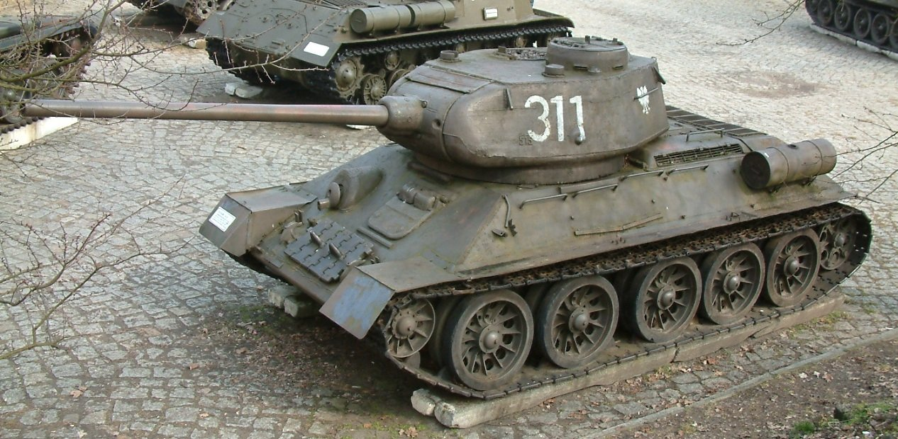

Танк (англ. tank) — бронированная боевая машина,
чаще всего на гусеничном ходу,[сн 1]
как правило с пушечным и дополнительным пулемётным вооружением,
обычно установленным во вращающейся полноповоротной башне,
предназначенным в основном для стрельбы прямой наводкой.[1]
 назад ко второй странице